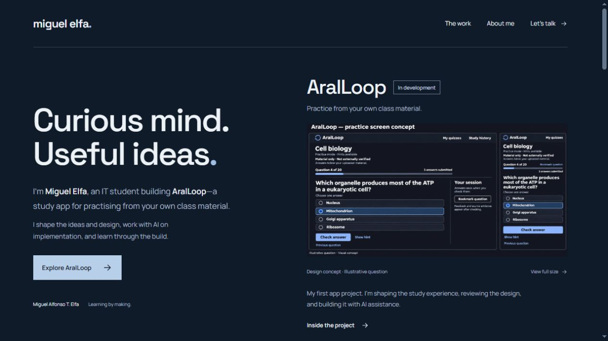

AralLoopIn development
Practice from your own class material.

Design concept · Illustrative questionView full size
My first app project. I’m shaping the study experience, reviewing the design, and building it with AI assistance.
Inside the projectI’m Miguel Elfa, an IT student building AralLoop—a study app for practising from your own class material.
I shape the ideas and design, work with AI on implementation, and learn through the build.
Explore AralLoopPractice from your own class material.
My first app project. I’m shaping the study experience, reviewing the design, and building it with AI assistance.
Inside the projectThe interface makes room for the actual question, with clear text and answer choices.
Blue marks the chosen answer. It doesn’t tell the student whether they’re correct.
The concept separates choosing an answer from checking it and reviewing source evidence.
In development · Design concept · Illustrative question
A personal study-app project.
Not publicly launched.
Your class material.
More ways to practise.
I’m building AralLoop to help students practise upcoming quizzes and exams using their own PDFs, slides, and Word documents.
The project is still under construction. I’m refining the experience and checking the flows before making it available to others.
The Ink & Blue direction gives AralLoop a stronger identity around navigation, while the question area stays calm: readable text, clear choices, and a selected answer that doesn’t pretend to be a correct answer.
The image above is a visual concept with a sample question, not a screenshot of a released app.
AralLoop’s development includes practice and exam modes, saved quizzes, and source-linked answer review. Local checks are part of the work; they don’t establish public-launch readiness or guarantee AI accuracy.
I’m continuing to refine the interface and verify the experience before sharing a public demo.
My contributionI chose AralLoop’s name and visual direction, shaped the study workflow, and review the layouts and interactions as the project develops.
Where AI helpsAI helps explore designs, implement and revise the code, and work through development checks. I make decisions, give feedback, and keep learning how the system works.
A place to share what I’m building. I chose the typography, gave feedback on the layout and motion, and published it through GitHub and Vercel with guidance.
View the portfolio source
A cinematic opening. But the artwork said more about technology than it did about me.
Useful ideas.
Useful
ideas.
I wanted the headings to feel more deliberate. Comparing typefaces helped me choose Space Grotesk.

This revision puts AralLoop first, with an honest development status and a clearer account of my contribution.
AralLoop is my first app project. I’ll add other personal projects here as they take shape.
I’m Miguel Alfonso T. Elfa.
An IT student with ideas I want to put to use.
I’m drawn to the point where a rough idea becomes something you can click, test, and improve. AI is part of how I explore that, from asking questions to working through a build.
I want each project to deepen my understanding of the code behind it. AralLoop is where I’m putting that into practice.
An idea, an opportunity, or something I could learn from.
I’d like to hear it.